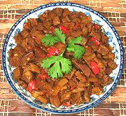

|
Bopis - Diced Pork HeartsFilipino - Bopis | ||||
| Serves: Effort: Sched: DoAhead: |
2 main ** 2-1/4 hrs Yes |
A popular traditional dish. Actually, this should be "Pork Heart & Lungs" (and sometimes spleen). Other pig parts are also used, depending on region and availability. | |||
|
1-1/2 1/2 4 4 5 2 1-1/2 1/4 1/4 1/4 1/3 1 ----- |
# T cl oz oz T c c t t T --- |
Pig Hearts (1) Annatto seed (2) Garlic Onion Bell Pepper, red Chili, red (3) Oil Vinegar (4) Stock Pepper Salt Fish Sauce (5) -- Serve With Jasmine rice |
Prep - (1-3/4 hrs - 25 min work)
|